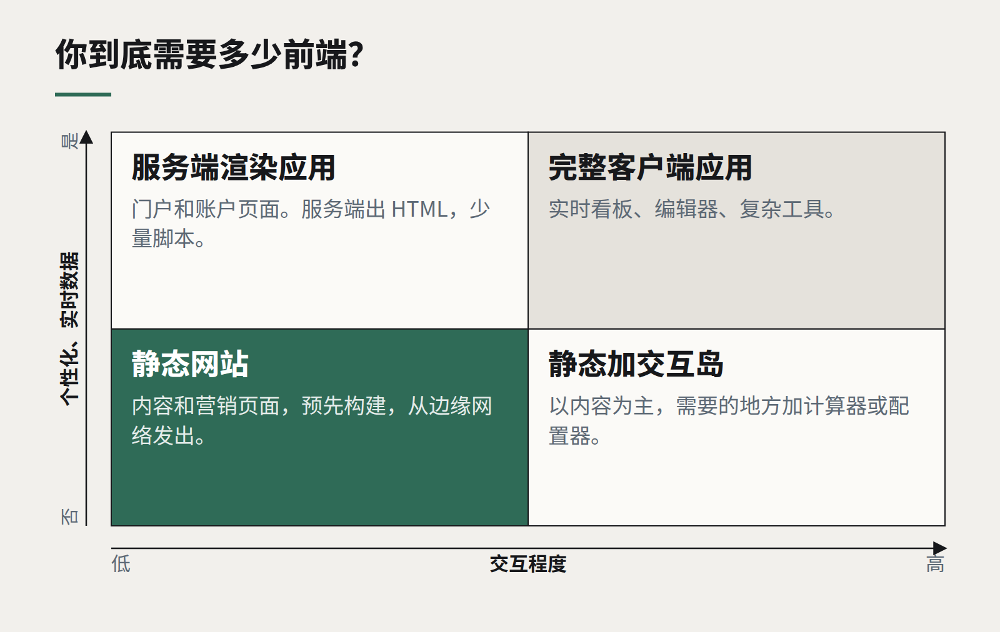

洞察
技术栈
选前端框架，主要是在选团队
主流框架之间的技术差异已经缩小。真正还不同的，是你能招到谁、代码能被支持多久，以及你实际需要多少框架。
客户仍然会问我们该用哪个前端框架，往往期待一个技术上的裁决。我们诚实的回答是：在主流选项之间，技术差异远不如五年前重要。它们已经汇聚到相似的理念上——组件、服务端渲染、细粒度响应式，以及一个比过去交给浏览器更少 JavaScript 的构建步骤。在能干的人手里，任何一个都能做出快速、无障碍、易维护的产品。
真正还不同的——也是应该驱动决策的——主要关乎人和时间。
真正起决定作用的问题
- 谁来维护？ 你现有团队熟悉的框架，胜过一个理论上更好、却要他们顶着截止日期现学的框架。如果要招人，就看看本地能招到谁。在新西兰，最流行框架的人才池是其他选项的好几倍，这会同时体现在招聘周期和薪资水平上。
- 它要用多久？ 一个企业应用可能要活十年。优先选择有长期稳定发布记录、升级路径清晰、背后支持不依赖于某一家公司不断变化的优先级的框架。
- 你需要多少交互？ 这是最常被跳过的问题。一个内容网站、营销网站或简单的表单型工具，可能几乎不需要客户端 JavaScript。服务端渲染的 HTML 加上小块交互“岛屿”，往往比一个完整的客户端应用开发更快、加载更快、维护更便宜。
- 你的其他技术栈是什么样的？ 一个与后端共享语言和类型的框架，能消除一整类集成 bug。

小心“重写”的动机
最昂贵的框架决策通常不是第一个，而是第二个：因为某个新框架很时髦，就重写一个运行良好的产品。出于这个理由的重写几乎从来收不回成本。如果一个现有应用很难改，原因更多在于它的结构——纠缠的状态、缺失的测试、模糊的边界——而不在于框架，而这些问题会跟着代码一起搬家。
当变更确实有必要时，要渐进迁移，一次一条路由或一棵组件树，而不是把功能开发停掉一年。
我们的默认选择
对我们构建的大多数企业应用，默认方案是：一个主流的组件化框架，配合服务端渲染，全程 TypeScript，再加一个小而维护良好、用客户设计令牌装扮的组件库。对于以内容为主的网站，我们倾向于静态生成、尽量少用 JavaScript。两个默认选择的理由相同：好招人、好交接、三年后不太可能把客户困住。
框架不是战略。最好的选择，通常是你的团队能在产品整个生命周期里用好的那一个——而这是一个关于你的团队的问题，不是关于框架的问题。
继续阅读
全部洞察